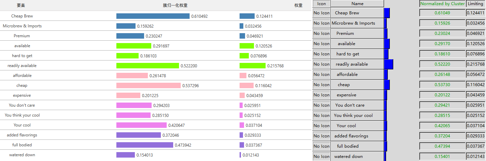
Super Decisions有一个Beer Marketshare示例， 本文在yaanp中根据该示例构建同样的网络模型，并输入同样的判断矩阵数据。 在计算时，选择不进行一致性修正，yaanp与Super Decisions的计算结果完全一致。
构建模型、输入判断矩阵数据
在yaanp中创建一个单网络模型，然后构建与Super Decisions的Beer Marketshare示例完全一致的网络模型模型，如下图所示。
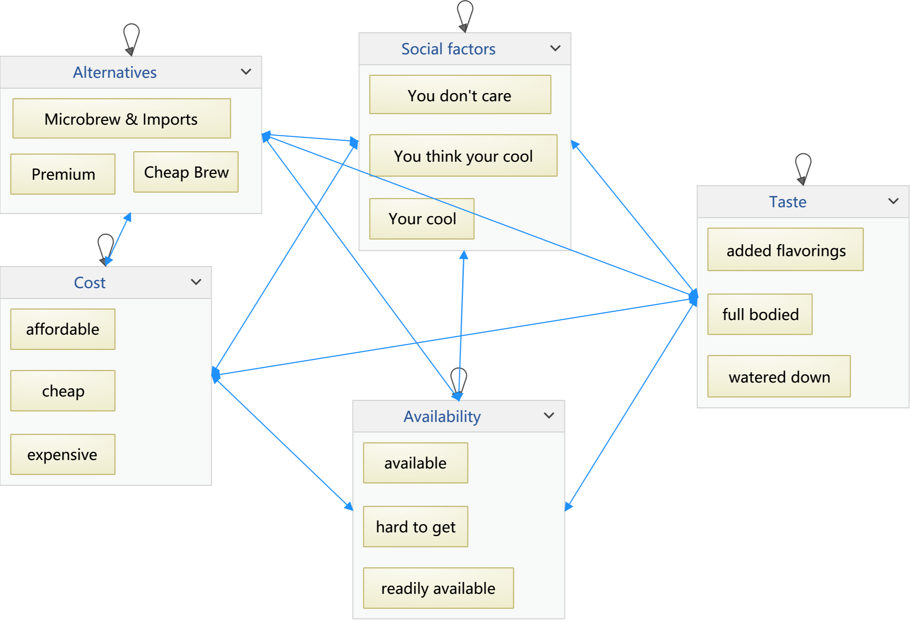
可以使用Super Decisions打开Beer Marketshare示例(Beer_marketshare_network.sdmod)查看其模型，如下图所示。
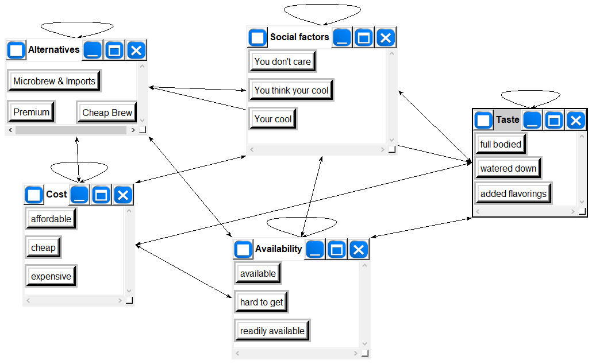
按照示例中的判断矩阵两两比较数据，利用yaanp的判断矩阵数据输入功能，输入判断矩阵两两比较数据。
原始的Beer Marketshare示例中有很多不一致的判断矩阵，yaanp中开始计算时会显示处理窗口。由于Super Decisions没有一致性自动修正功能，所以这里选择不修正。选择下图红框中的“直接计算不一致的判断矩阵(不做修正)”。
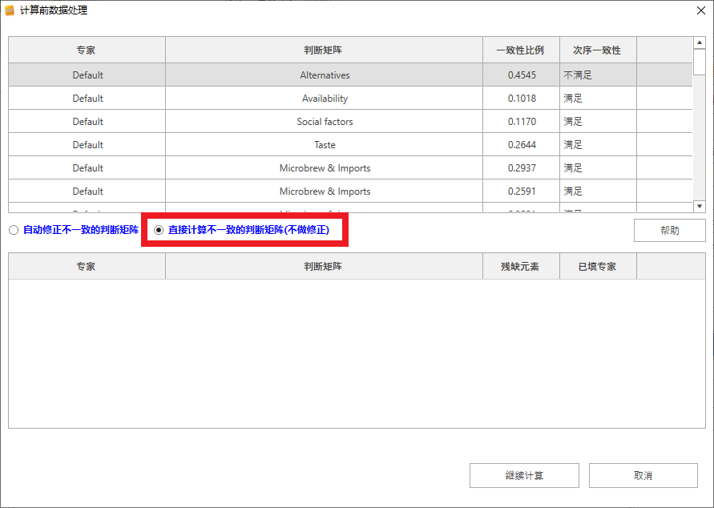
排序权重
计算完成后，yaanp会自动切换到计算结果显示界面，显示各要素的排序权重。
下图中，左侧为yaanp的排序权重列表显示截图，右侧为Super Decisions的Priorities窗口截图，可以看出计算结果完全相同。图中结果是yaanp中判断矩阵计算方法选择为“幂法”的情况，如果选择和法或根法，会有一些差别。
矩阵数据
计算过程中的簇权重数据、未赋权超矩阵、赋权超矩阵和极限矩阵数据，yaanp与Super Decisions也完全相同。
簇权重矩阵
yaanp的簇权重矩阵如下图所示。
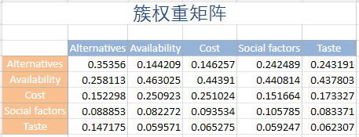
Super Decisions的簇权重矩阵如下图所示。
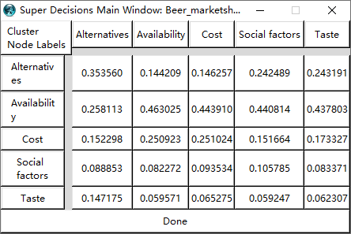
未赋权超矩阵
yaanp的未赋权超矩阵如下图所示。
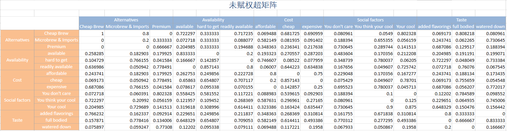
Super Decisions的未赋权超矩阵如下图所示。
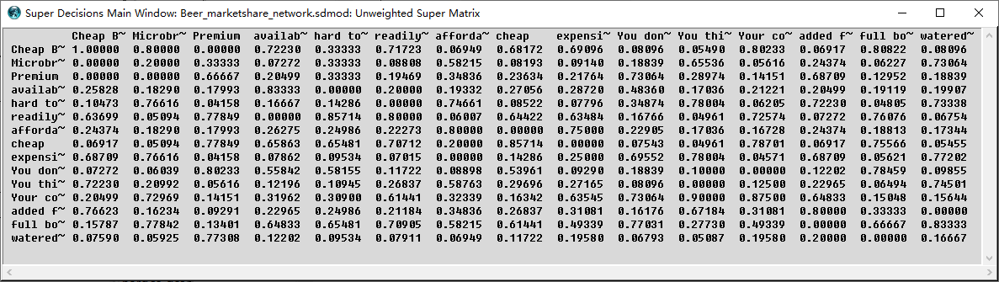
赋权超矩阵
yaanp的赋权超矩阵如下图所示。
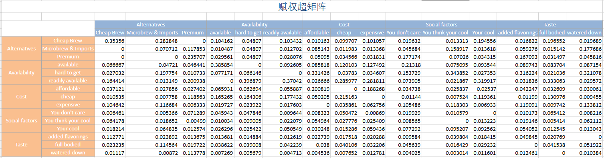
Super Decisions的赋权超矩阵如下图所示。
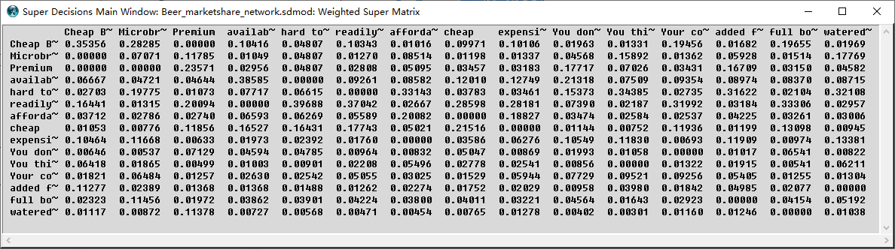
极限矩阵
yaanp的极限矩阵如下图所示。
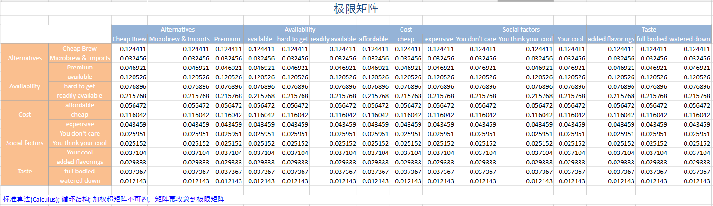
Super Decisions的赋权超矩阵如下图所示。
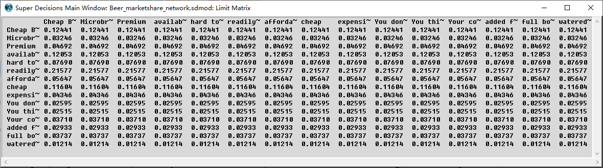
存盘文件
如果有兴趣，可以下载本文示例的存盘文件、打开查看其中详细内容。
- Beer Marketshare示例的yaanp存盘文件下载：beer.anpx；
- Super Decisions的这个示例存盘文件存放在它的安装文件夹下的samples文件夹中： samples/3_ANP_modles/Beer_marketshare_network.sdmod。